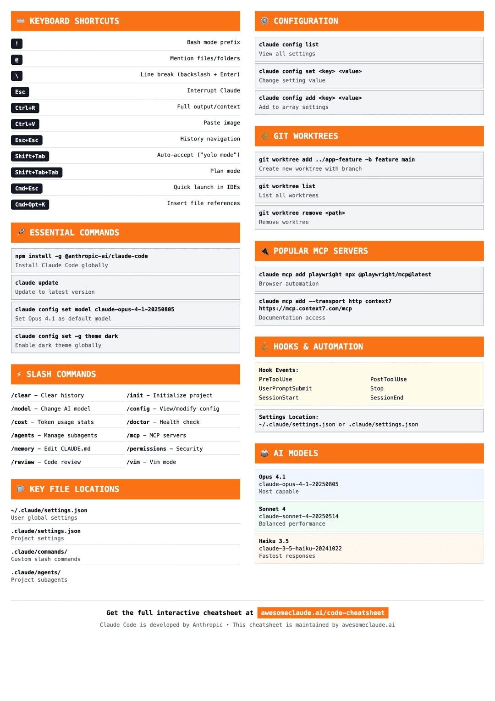

全网最全速查手册
完整参考指南，包含命令、快捷键、配置、插件、技能、MCP 集成和自动化工作流
快速入门
通过 curl 安装（macOS/Linux）
推荐安装方式
curl -fsSL https://claude.ai/install.sh | bash通过 Homebrew 安装
在 macOS 上使用 Homebrew 安装
brew install --cask claude-code通过 PowerShell 安装（Windows）
在 Windows 上使用 PowerShell 安装
irm https://claude.ai/install.ps1 | iex通过 npm 安装
使用 npm 全局安装（需要 Node.js 18+）
npm install -g @anthropic-ai/claude-code启动 Claude 代码
在您的项目中启动 Claude 代码
cd your-project && claude更新到最新版本
保持 Claude 代码最新
claude update键盘快捷键
! | |
@ | |
\ | |
Esc | |
Esc+Esc | |
Ctrl+R | |
Ctrl+V | |
Shift+Tab | |
Shift+Tab+Tab | |
Cmd+Esc / Ctrl+Esc | |
Cmd+Option+K / Alt+Ctrl+K |
项目本地:.claude/settings.local.json
(个人设置，Git 忽略)项目共享:.claude/settings.json
(团队设置)用户全局:~/.claude/settings.json
(个人默认设置)
查看所有设置
列出当前配置
claude config list获取设置值
检查特定设置
claude config get <键名>设置配置
更改设置值
claude config set <键名> <值>添加到列表设置
向数组类设置（如权限）添加值
claude config add <键名> <值>从列表中移除
从数组设置中移除值
claude config remove <键名> <值>检查点 - 撤销与回滚
⏮️ 自动安全网
Claude 代码自动跟踪所有文件编辑，让您在出现问题时快速恢复到之前的状态。
⌨️ 回滚命令
Esc+Esc | |
/rewind |
外部更改无法追踪：
Claude 代码外的手动编辑不会被捕获非版本控制：
检查点是对 Git 的补充，但不能替代它
💡 使用检查点进行快速恢复，使用 Git 进行永久历史记录
斜杠命令 - 交互式会话控制
⚡ 交互式会话命令
在 Claude 代码聊天界面中直接输入命令来控制 Claude 的行为。
📋 内置命令
/add-dir | |
/agents | |
/bug | |
/clear | |
/compact [指令] | |
/config | |
/cost | |
/doctor | |
/help | |
/init | |
/login | |
/logout | |
/mcp | |
/memory | |
/model | |
/permissions | |
/pr_comments | |
/review | |
/rewind | |
/sandbox | |
/status | |
/terminal-setup | |
/usage | |
/vim |
🎯 自定义斜杠命令模板
基础项目命令
创建简单的项目特定命令 📁 保存位置: .claude/commands/optimize.md
分析这段代码的性能问题并建议优化方案：个人命令
创建适用于所有项目的用户级命令 📁 保存位置: ~/.claude/commands/security-review.md
审查这段代码的安全漏洞：带全部参数的命令
使用 $ARGUMENTS 占位符表示所有参数 📁 保存位置: .claude/commands/fix-issue.md
按照我们的编码标准修复问题 #$ARGUMENTS带位置参数的命令
使用 1, 2, $3 表示单个参数 📁 保存位置: .claude/commands/review-pr.md
---
参数提示: [pr编号] [优先级] [负责人]
描述: 按优先级和负责人审查拉取请求
---
审查 PR #$1，优先级 $2，分配给 $3。
重点关注安全性、性能和代码风格。Git 提交命令
带 bash 执行和文件引用的高级命令 📁 保存位置: .claude/commands/commit.md
---
允许工具: Bash(git add:*), Bash(git status:*), Bash(git commit:*)
参数提示: [消息]
描述: 创建 git 提交
---
## 上下文
- 当前 git 状态: !`git status`
- 当前 git 差异: !`git diff HEAD`
- 当前分支: !`git branch --show-current`
- 近期提交: !`git log --oneline -10`
## 任务
基于以上更改，创建单个 git 提交。带模型覆盖的命令
指定模型并禁用自动调用 📁 保存位置: .claude/commands/deep-analysis.md
---
描述: 执行深度代码分析
模型: claude-opus-4-1-20250805
禁用模型调用: true
---
对此代码库进行全面分析，重点关注：
- 架构模式
- 潜在的可扩展性问题
- 安全漏洞
- 性能瓶颈💡 使用技巧
项目命令：
存储在 .claude/commands/
中（与团队共享）个人命令：
存储在 ~/.claude/commands/
中（所有项目可用）参数：
使用 $ARGUMENTS
占位符表示动态值Bash 执行：
使用 !命令
在处理前运行命令文件引用：
使用 @文件名
包含文件内容MCP 命令：
格式: /mcp__服务器__提示名称
无头模式 - 程序化使用
🤖 非交互式运行 Claude 代码
使用 --print
（或 -p
）实现自动化、脚本和 CI/CD 管道。非常适合 SRE 机器人、自动代码审查和代理集成。
📋 关键无头命令
claude -p "查询" | |
claude -p --output-format json "查询" | |
claude -p --output-format stream-json "查询" | |
claude -c -p "查询" | |
claude --resume <会话ID> -p "查询" | |
claude --verbose -p "查询" | |
claude --max-turns 3 -p "查询" |
自动化事件调查
claude -p "分析这些错误" \
--append-system-prompt "你是 SRE 专家" \
--output-format json \
--allowedTools "Bash,Read,mcp__datadog"安全审计
自动化 PR 安全审查
gh pr diff 123 | claude -p \
--append-system-prompt "你是安全工程师" \
--output-format json \
--allowedTools "Read,Grep" > audit.json多轮会话
跨多个命令保持上下文
session_id=$(claude -p "开始审查" --output-format json | jq -r '.session_id')
claude --resume "$session_id" -p "检查合规性"
claude --resume "$session_id" -p "生成摘要"📊 输出格式
text (默认):
纯文本响应json:
带元数据的结构化数据（成本、持续时间、会话ID）stream-json:
实时处理的消息流
💡 使用 JSON 格式进行程序化解析和自动化
代理技能 - 模块化能力
🧠 什么是代理技能？
技能是扩展 Claude 功能的模块化能力。与斜杠命令（用户调用）不同，技能是模型调用的——Claude 会根据上下文自主使用它们。
位置:.claude/skills/
(项目) 或 ~/.claude/skills/
(个人)结构:
包含 SKILL.md 的目录 + 可选脚本和资源发现:
基于描述和上下文自动发现
📋 技能设置命令
mkdir -p .claude/skills/技能名称 | |
mkdir -p ~/.claude/skills/技能名称 | |
cat > .claude/skills/我的技能/SKILL.md |
基础单文件技能 📁 .claude/skills/commit-helper/SKILL.md
---
名称: 生成提交消息
描述: 根据 git 差异生成清晰的提交消息。在编写提交消息或审查暂存更改时使用。
---
# 生成提交消息
## 指令
1. 运行 `git diff --staged` 查看更改
2. 我将提供包含以下内容的提交消息：
- 不超过 50 字符的摘要
- 详细描述
- 受影响的组件
## 最佳实践
- 使用现在时
- 解释内容和原因，而非方式带工具权限的技能
限制工具访问的技能 📁 .claude/skills/code-reviewer/SKILL.md
---
名称: 代码审查员
描述: 审查代码的最佳实践和潜在问题。在审查代码、检查 PR 或分析代码质量时使用。
允许工具: Read, Grep, Glob
---
# 代码审查员
## 审查清单
1. 代码组织和结构
2. 错误处理
3. 性能考虑
4. 安全问题
5. 测试覆盖率🔄 技能与斜杠命令的区别
斜杠命令：
用户调用（输入 /命令
），简单提示，单文件代理技能：
模型调用（自动），复杂能力，多文件 + 脚本
💡 使用技能处理综合工作流，使用命令处理快速提示
插件 - 扩展 Claude 代码
🧩 什么是插件？
插件通过自定义命令、代理、钩子、技能和 MCP 服务器扩展 Claude 代码。从市场安装或创建自己的插件。
📋 插件管理命令
/plugin | |
/plugin marketplace add <URL或路径> | |
/plugin install <名称>@<市场> | |
/plugin enable <名称>@<市场> | |
/plugin disable <名称>@<市场> | |
/plugin uninstall <名称>@<市场> |
从 GitHub 添加插件市场
claude mcp add marketplace your-org/claude-plugins安装插件
从市场安装特定插件
/plugin install formatter@your-org本地开发市场
为插件开发添加本地市场
/plugin marketplace add ./dev-marketplace✨ 插件功能
自定义命令：
为工作流添加斜杠命令专业代理：
部署特定任务的专家子代理代理技能：
打包 Claude 可发现的能力自动化钩子：
在 Claude 代码事件上运行脚本MCP 服务器：
连接到外部工具和服务
MCP 服务器与扩展
🔌 模型上下文协议 (MCP)
通过外部工具和集成扩展 Claude 代码。MCP 服务器提供浏览器自动化、数据库访问和 API 集成等额外功能。
📋 MCP 管理命令
claude mcp add <名称> <命令> [参数...] | |
claude mcp add --transport sse <名称> <URL> | |
claude mcp add --transport http <名称> <URL> | |
claude mcp list | |
claude mcp remove <名称> |
读写记录，管理数据库和表格
claude mcp add --transport stdio airtable --env AIRTABLE_API_KEY=您的密钥 -- npx -y airtable-mcp-serverAsana
与您的 Asana 工作区交互
claude mcp add --transport sse asana https://mcp.asana.com/sseAtlassian
管理 Jira 工单和 Confluence 文档
claude mcp add --transport sse atlassian https://mcp.atlassian.com/v1/sseBox
访问企业内容并自动化工作流
claude mcp add --transport http box https://mcp.box.com/Canva
浏览、总结、自动填充和生成 Canva 设计
claude mcp add --transport http canva https://mcp.canva.com/mcpClickUp
任务管理，项目跟踪
claude mcp add --transport stdio clickup --env CLICKUP_API_KEY=您的密钥 --env CLICKUP_TEAM_ID=您的团队 -- npx -y @hauptsache.net/clickup-mcpCloudflare
构建应用，分析流量，管理安全
claude mcp add --transport http cloudflare https://mcp.cloudflare.com/mcpCloudinary
上传、管理、转换媒体资源
claude mcp add --transport http cloudinary https://mcp.cloudinary.com/mcpDaloopa
高质量基础财务数据
claude mcp add --transport http daloopa https://mcp.daloopa.com/server/mcpFigma
在完整 Figma 上下文中生成更好的代码
claude mcp add --transport http figma https://mcp.figma.com/mcpFireflies
从会议记录中提取见解
claude mcp add --transport http fireflies https://api.fireflies.ai/mcpGitHub
管理仓库、PR 和问题
claude mcp add --transport http github https://api.githubcopilot.com/mcp/HubSpot
访问和管理 HubSpot CRM 数据
claude mcp add --transport http hubspot https://mcp.hubspot.com/anthropicHugging Face
访问 Hugging Face Hub 和 Gradio 应用
claude mcp add --transport http huggingface https://huggingface.co/mcpIntercom
访问客户对话和工单
claude mcp add --transport http intercom https://mcp.intercom.com/mcpinvideo
构建视频创建能力
claude mcp add --transport sse invideo https://mcp.invideo.io/sseJam
通过访问 Jam 记录进行 AI 代理调试
claude mcp add --transport http jam https://mcp.jam.dev/mcpLinear
问题跟踪和项目管理
claude mcp add --transport http linear https://mcp.linear.app/mcpMonday
管理 monday.com 看板和项目
claude mcp add --transport http monday https://mcp.monday.com/mcpNetlify
创建、部署和管理网站
claude mcp add --transport http netlify https://netlify-mcp.netlify.app/mcpNotion
阅读文档，更新页面，管理任务
claude mcp add --transport http notion https://mcp.notion.com/mcpPayPal
支付处理和交易管理
claude mcp add --transport http paypal https://mcp.paypal.com/mcpPlaid
银行数据和金融账户链接
claude mcp add --transport sse plaid https://api.dashboard.plaid.com/mcp/ssePlaywright
高级浏览器自动化
claude mcp add --transport stdio playwright -- npx @playwright/mcp@latestPuppeteer
浏览器自动化
claude mcp add --transport stdio puppeteer -- npx -y @modelcontextprotocol/server-puppeteerSentry
监控错误，调试生产问题
claude mcp add --transport http sentry https://mcp.sentry.dev/mcpSocket
依赖项的安全分析
claude mcp add --transport http socket https://mcp.socket.dev/Square
支付、库存、订单等
claude mcp add --transport sse square https://mcp.squareup.com/sseStripe
支付处理和订阅管理
claude mcp add --transport http stripe https://mcp.stripe.comStytch
配置和管理认证服务
claude mcp add --transport http stytch http://mcp.stytch.dev/mcpSupabase
数据库操作
claude mcp add --transport stdio supabase --env SUPABASE_ACCESS_TOKEN=您的令牌 -- npx -y @supabase/mcp-server-supabase@latestVercel
管理项目、部署和日志
claude mcp add --transport http vercel https://mcp.vercel.com/Workato
访问应用、工作流和数据
claude mcp add --transport http workato https://mcp.workato.com/mcpZapier
连接 8,000+ 应用
claude mcp add --transport http zapier https://mcp.zapier.com/mcpGit 工作树 - 并行开发
🚀 为何在 Claude 代码中使用 Git 工作树？
无上下文丢失：
每个 Claude 会话保持完整的项目理解并行工作：
在继续功能开发的同时处理热修复安全实验：
在完全隔离的环境中测试高风险更改模型比较：
在相同任务上运行不同 AI 模型零切换成本：
不再需要 git stash、checkout、重启循环
📋 基本工作树命令
git worktree add <路径> <分支> | |
git worktree add <路径> -b <分支> <起点> | |
git worktree list | |
git worktree remove <路径> | |
git worktree prune | |
git worktree move <工作树> <新路径> |
同时处理多个功能
git worktree add ../myapp-auth -b feature/auth main
git worktree add ../myapp-api -b feature/api main
cd ../myapp-auth && claude
cd ../myapp-api && claude开发中处理热修复
在不丢失上下文的情况下处理紧急修复
git worktree add ../myapp-hotfix -b hotfix/critical main
cd ../myapp-hotfix
claude "修复关键错误"
# 原始工作在主目录中继续安全实验测试
在隔离环境中测试高风险更改
git worktree add ../myapp-experiment -b experiment/refactor main
cd ../myapp-experiment
claude "重构整个认证系统"
# 如果失败，只需删除目录模型比较
比较不同的 AI 实现
git worktree add ../ml-sonnet -b experiment/sonnet main
git worktree add ../ml-opus -b experiment/opus main
cd ../ml-sonnet && claude --model sonnet
cd ../ml-opus && claude --model opus代码审查准备
在不影响主要工作的情况下优化代码
git worktree add ../myapp-review -b review/cleanup feature-branch
cd ../myapp-review
claude "添加文档、测试并清理代码风格"
git merge review/cleanup子代理 - 专业 AI 助手
🤖 为何使用子代理？
上下文保留：
每个子代理与主对话有独立的上下文专业专长：
为特定领域和任务微调的提示可重用工作流：
跨项目并与团队共享子代理工具控制：
为安全性按子代理授予特定工具访问权限自动委派：
Claude 主动使用合适的子代理
📁 子代理位置
项目子代理：.claude/agents/
(最高优先级，团队共享)用户子代理：~/.claude/agents/
(个人，所有项目)文件格式：
带 YAML 前言的 Markdown
📋 基本子代理命令
/agents | |
claude "使用 [名称] 子代理来..." | |
mkdir -p .claude/agents | |
mkdir -p ~/.claude/agents |
编写/修改代码后的专家代码审查 📁 保存位置: .claude/agents/code-reviewer.md
---
名称: 代码审查员
描述: 专家代码审查专员。主动审查代码质量、安全性和可维护性。在编写或修改代码后立即使用。
工具: Read, Grep, Glob, Bash
模型: 继承
---
您是确保代码质量和安全性的高级代码审查员。
调用时：
1. 运行 git diff 查看近期更改
2. 关注修改的文件
3. 立即开始审查
审查清单：
- 代码简洁易读
- 函数和变量命名恰当
- 无重复代码
- 正确的错误处理
- 无暴露的密钥或 API 密钥
- 已实现输入验证
- 良好的测试覆盖率
- 已处理性能问题
按优先级提供反馈：
- 关键问题（必须修复）
- 警告（应该修复）
- 建议（考虑改进）
包含具体修复问题的示例。调试器
针对错误和测试失败的调试专家 📁 保存位置: .claude/agents/debugger.md
---
名称: 调试器
描述: 错误、测试失败和意外行为的调试专家。在遇到任何问题时主动使用。
工具: Read, Edit, Bash, Grep, Glob
模型: sonnet
---
您是专门从事根本原因分析的专家调试员。
调用时：
1. 捕获错误信息和堆栈跟踪
2. 确定复现步骤
3. 隔离失败位置
4. 实施最小修复
5. 验证解决方案有效
调试流程：
- 分析错误信息和日志
- 检查最近的代码更改
- 形成和测试假设
- 添加策略性调试日志
- 检查变量状态
对每个问题提供：
- 根本原因解释
- 支持诊断的证据
- 具体代码修复
- 测试方法
- 预防建议
专注于修复根本问题，而非仅解决症状。数据科学家
SQL 和 BigQuery 的数据分析专家 📁 保存位置: .claude/agents/data-scientist.md
---
名称: 数据科学家
描述: SQL 查询、BigQuery 操作和数据洞察的数据分析专家。在数据分析任务中主动使用。
工具: Bash, Read, Write
模型: opus
---
您是专门从事 SQL 和 BigQuery 分析的数据科学家。
调用时：
1. 理解数据分析需求
2. 编写高效的 SQL 查询
3. 在适当时使用 BigQuery 命令行工具 (bq)
4. 分析和总结结果
5. 清晰呈现发现
关键实践：
- 编写带适当过滤器的优化 SQL 查询
- 使用合适的聚合和连接
- 包含解释复杂逻辑的注释
- 格式化结果以提高可读性
- 提供数据驱动的建议
始终确保查询高效且成本效益高。💡 使用技巧
自动调用：
在描述中包含"主动"或"必须使用"显式调用："使用代码审查员子代理检查我的代码"
链式调用："先使用调试器再使用优化器子代理"
工具限制：
仅为安全和专注授予必要工具团队共享：
将项目子代理纳入版本控制
📝 子代理文件格式
---
名称: 您的子代理名称
描述: 何时调用此子代理
工具: Read, Edit, Bash # 可选 - 如果省略则继承全部
---
您的子代理系统提示在此处。
包含具体指令、示例和约束。
定义子代理在其领域内
解决问题的角色、能力和方法。权限与安全
🔒 开箱即用权限模板
为不同安全级别复制完整的 settings.json 配置。保存到项目的 .claude/settings.json
。
⚠️ MCP 工具权限
**不支持通配符：*mcp__github__
无效✅ 批准服务器的所有工具："allow": ["mcp__github"]
✅ 批准特定工具："allow": ["mcp__github__get_issue"]
🏢 企业配置
托管设置：/etc/claude-code/managed-settings.json
托管 MCP：/etc/claude-code/managed-mcp.json
MCP 允许/拒绝列表：
通过 allowedMcpServers
和 deniedMcpServers
控制员工可使用的 MCP 服务器
💡 拒绝列表优先级绝对高于允许列表
基础安全
阻止敏感文件，允许常见开发命令 💡 大多数项目的良好起点
{
"permissions": {
"allow": [
"Bash(npm run *)",
"Bash(git status)",
"Bash(git diff)",
"Bash(git add *)",
"Bash(git commit *)"
],
"ask": [
"Bash(git push:*)",
"Bash(npm install *)"
],
"deny": [
"Read(./.env*)",
"Read(./secrets/**)",
"Read(./**/credentials*)",
"Bash(rm -rf:*)",
"Bash(curl:*)"
]
}
}严格安全
敏感项目的最高安全性 💡 适用于生产系统或敏感代码库
{
"permissions": {
"ask": [
"Bash(*)",
"Write(*)",
"Edit(*)"
],
"deny": [
"Read(./.env*)",
"Read(./secrets/**)",
"Read(./config/**)",
"Read(./**/credentials*)",
"Read(./**/*.key)",
"Read(./**/*.pem)",
"WebFetch",
"Bash(curl:*)",
"Bash(wget:*)",
"Bash(ssh:*)"
]
}
}斜杠命令权限
控制 Claude 可调用的斜杠命令 💡 限制自动命令执行
{
"permissions": {
"allow": [
"SlashCommand:/commit",
"SlashCommand:/review-pr:*"
],
"deny": [
"SlashCommand"
]
}
}企业 MCP 限制
企业 MCP 服务器允许/拒绝列表示例 💡 控制可使用的 MCP 服务器
{
"allowedMcpServers": [
{
"serverName": "github"
},
{
"serverName": "sentry"
},
{
"serverName": "company-internal"
}
],
"deniedMcpServers": [
{
"serverName": "filesystem"
}
]
}钩子 - 自动化与控制
⚠️ 安全警告
钩子使用您的凭证自动执行 shell 命令。添加前务必审查钩子代码。恶意钩子可能损坏您的系统或窃取数据。 使用钩子自动化格式化、日志记录、通知和自定义权限，而非依赖 Claude 记住这些任务。
📋 钩子事件
PreToolUse | |
PostToolUse | |
UserPromptSubmit | |
Notification | |
Stop | |
SubagentStop | |
PreCompact | |
SessionStart | |
SessionEnd |
/hooks | |
claude --debug | |
mkdir -p .claude/hooks | |
chmod +x .claude/hooks/script.sh |
在编辑文件上运行 prettier事件: PostToolUse****匹配器: Edit|Write
{
"hooks": {
"PostToolUse": [
{
"matcher": "Edit|Write",
"hooks": [
{
"type": "command",
"command": "npx prettier --write $FILE_PATH"
}
]
}
]
}
}记录活动
记录所有 Claude 会话活动事件: Stop
{
"hooks": {
"Stop": [
{
"hooks": [
{
"type": "command",
"command": "echo \"$(date): $CONVERSATION_SUMMARY\" >> ~/.claude/activity.log"
}
]
}
]
}
}🏗️ 钩子结构与技巧
设置位置：~/.claude/settings.json
(用户) 或 .claude/settings.json
(项目)匹配器：
匹配工具名称（如 Bash
, Edit|Write
, *
）项目脚本：
相对路径使用 $CLAUDE_PROJECT_DIR**退出代码：**0
=成功, 2
=阻止并显示给 Claude, 其他=错误JSON 输入：
钩子通过 stdin 接收会话数据（使用 jq
解析）调试：
使用 claude --debug
查看钩子执行详情
PDF 和 PNG 下载
可打印版本
专为打印或桌面参考设计的特殊版本。包含所有基本快捷键、命令、配置和文件位置的紧凑格式。

Claude 代码速查手册 - 包含快捷键、命令和配置的可打印版本